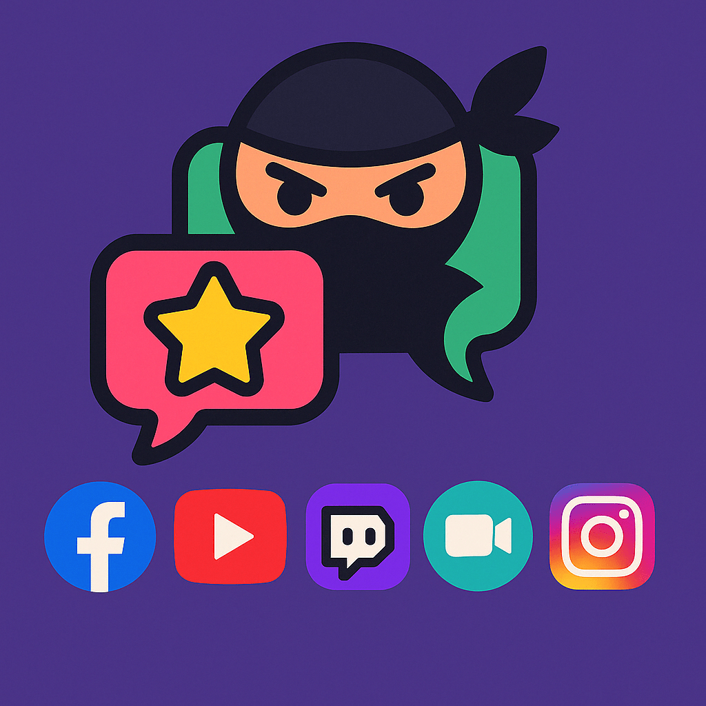
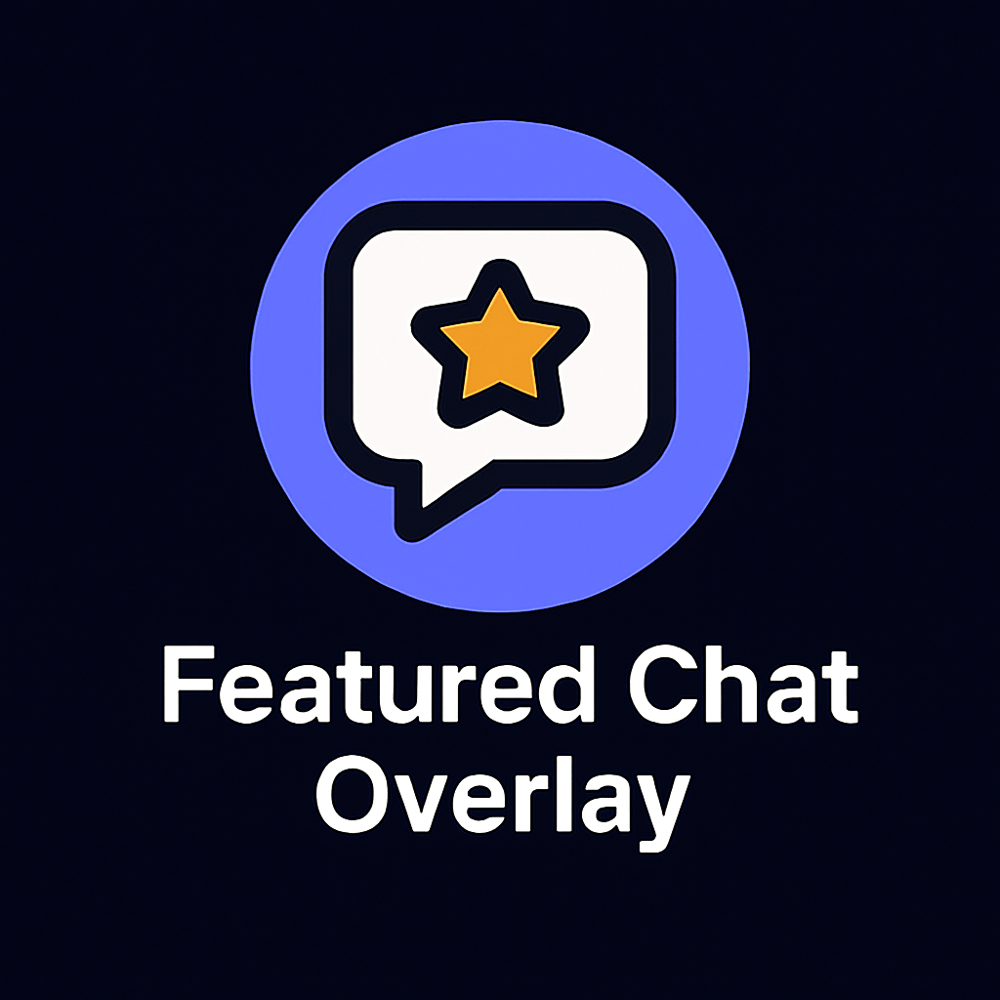
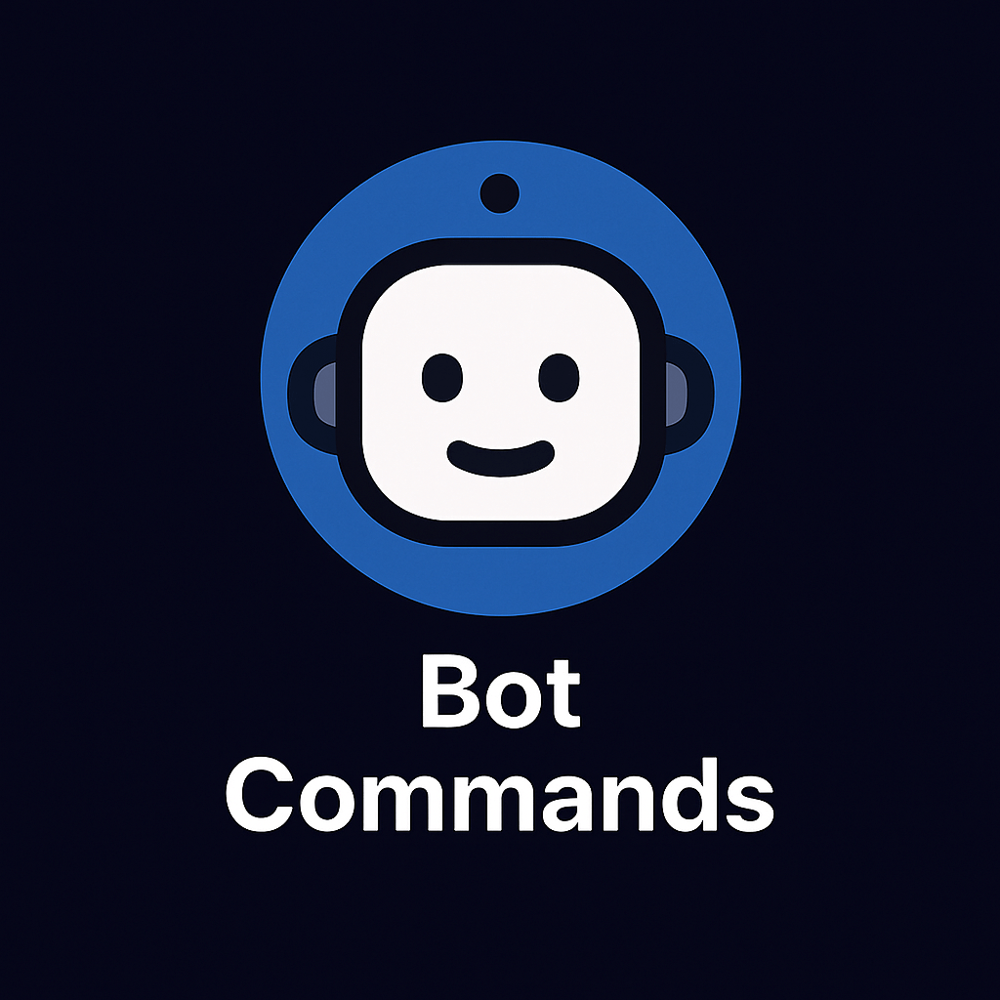
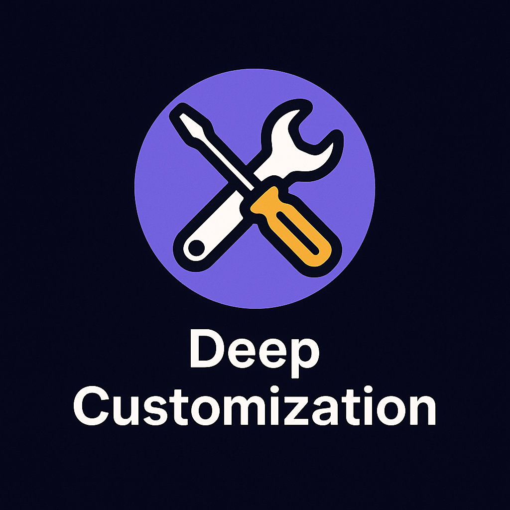
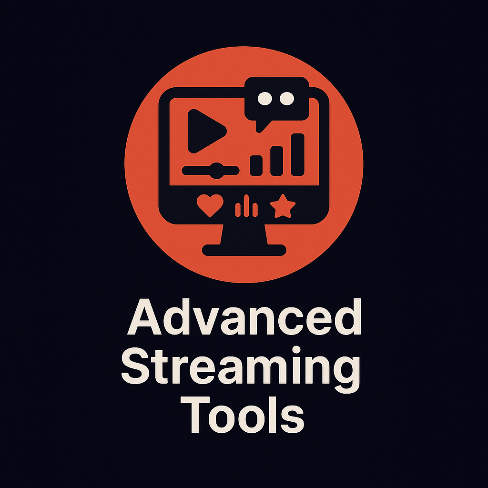

Spojte své chaty, ukažte diváky na obrazovce a přizpůsobte každé vysílání svému stylu.
Prohlédnout 126 nápadů pro vysílání · Náhled nálepkových odměn

Spojte se s diváky na všech svých vysílacích platformách současně. Social Stream Ninja slučuje zprávy chatu z desítek platforem do jednoho snadno ovladatelného panelu.

Zobrazte nejlepší zprávy svých diváků přímo ve vysílání pomocí pěkných, přizpůsobitelných překryvů.

Vytvářejte automatické interakce s diváky pomocí vlastních příkazů a odpovědí.
Vyberte si hlasového spolumoderátora, chatovacího bota, pomocníka v prohlížeči nebo cílené nástroje zpracování AI, aniž byste zbytek vysílání vázali na jediného poskytovatele.

Oživte zprávy chatu převodem textu na řeč a udělejte své vysílání poutavější a přístupnější.
Rozšiřte možnosti Social Stream Ninja pomocí širokých možností integrace API.

Přizpůsobte si Social Stream Ninja pomocí rozsáhlých možností úprav funkcí i vzhledu.

Rozšiřte své vysílání sadou profesionálních nástrojů navržených pro zapojení diváků a interakci.

Social Stream Ninja funguje s více než 100 platformami a službami – zde je výběr
Nenašli jste svou platformu? Připojte se k našemu Discordu a požádejte o novou integraci nebo zjistěte, jak ji přidat sami.
| Vybrat k zobrazení | Social Stream Ninja | Konkurence |
|---|---|---|
| Cena | Zdarma a s otevřeným zdrojovým kódem | Předplatné $10–50/měsíc |
| Podpora platforem | Více než 100 platforem | 1–5 platforem |
| Vyžadované klíče API | Pro většinu platforem žádné | Vyžadované pro většinu platforem |
| Přizpůsobení | Neomezené pomocí CSS/JS | Omezené šablony |
| Obousměrný chat | Ano, na většině platforem | Omezené nebo za příplatek |
| Integrace AI | Místní modely, hlasový spolumoderátor, cloudoví poskytovatelé a vlastní API | Omezené nebo žádné |
| Komunitní podpora | Aktivní komunita na Discordu | Liší se podle poskytovatele |
| Rozšíření | Otevřené příspěvkům | Uzavřený ekosystém |
| Interaktivní hry | Vestavěné minihry | Není dostupné |
| AI spolumoderátor | Multimodální asistent AI | Není dostupné |
Začněte používat Social Stream Ninja ještě dnes a více zapojte své diváky.